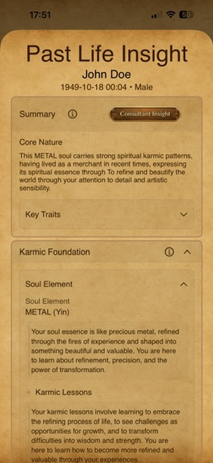

AI-guided narratives
Advanced AI weaves your karmic patterns and life themses into meaningful, personalized stories.
Uncover the stories that shape your soul.
Past Life Insight offers a deeper look into your karmic themes, life patterns, and soul lessons—woven into rich, AI-guided narratives designed to enlighten and empower.
Each reading can be exported as a beautiful, shareable PDF that you can save, print, and revisit anytime.

Advanced AI weaves your karmic patterns and life themses into meaningful, personalized stories.
Generate beautiful, formatted PDF readings you can keep and treasure.
Save your insights, print them out, or share with those you trust and love.
Organized sections make it easy to explore themes, traits, and karmic lessons.
Your data and readings are yours alone. We protect your privacy at every step.